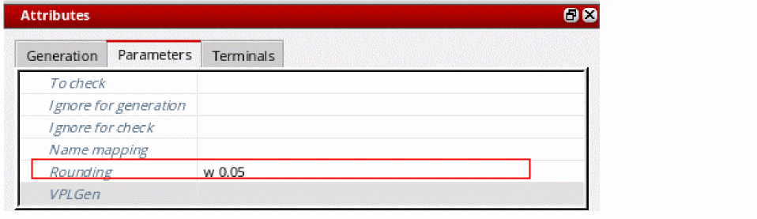
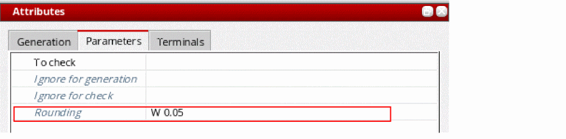

Rounding Parameter Values
The Rounding option on the Parameters tab lets you define how the value of a specified parameter is rounded when it is evaluated by Layout XL. It is typically used to prevent folded devices from becoming off-grid.
In previous releases, you could use the equivalent lxRounding property to set a tolerance when Layout XL compared parameter values during the
Rounding Cellview Parameter Values
To specify how a parameter value is rounded for a cell:
- In the Configure Physical Hierarchy window, click the Cells tab.
-
Click the row containing the cell with the parameter value to be rounded.
The row is highlighted and the options in the Attributes pane are enabled. -
In the Parameters tab, type the Rounding argument you need in the field provided.
For example,(w 0.05 round)rounds the value of a parameter calledwto the closest multiple of 0.05 microns.
 -
From the menu bar, choose File – Save to save the physical configuration view.
The setting is saved for all instances of the cell in question.
Rounding Instance or Occurrence Parameter Values
To specify how an instance or occurrence parameter value is rounded:
- In the Configure Physical Hierarchy window, click the Instances tab.
-
Click the row containing the instance with the parameter values to be rounded.
The row is highlighted and the options in the Attributes pane are enabled. - Do one of the following.
-
In the Parameters tab, type the Rounding argument you need in the field provided.
For example,(w 0.05 round)rounds the value ofwto the closest multiple of 0.05 nanometers.
 -
From the menu bar, choose File – Save to save the physical configuration view.
The setting is saved for the specified instance or occurrence. If you specified an occurrence mapping the, the symbol is also changed to indicate this.
Related Topics
Syntax for Rounding Parameter Values
Rounding Instance or Occurrence Parameter Values
Instance Mode and Occurrence Mode
Syntax for Rounding Parameter Values
Return to top